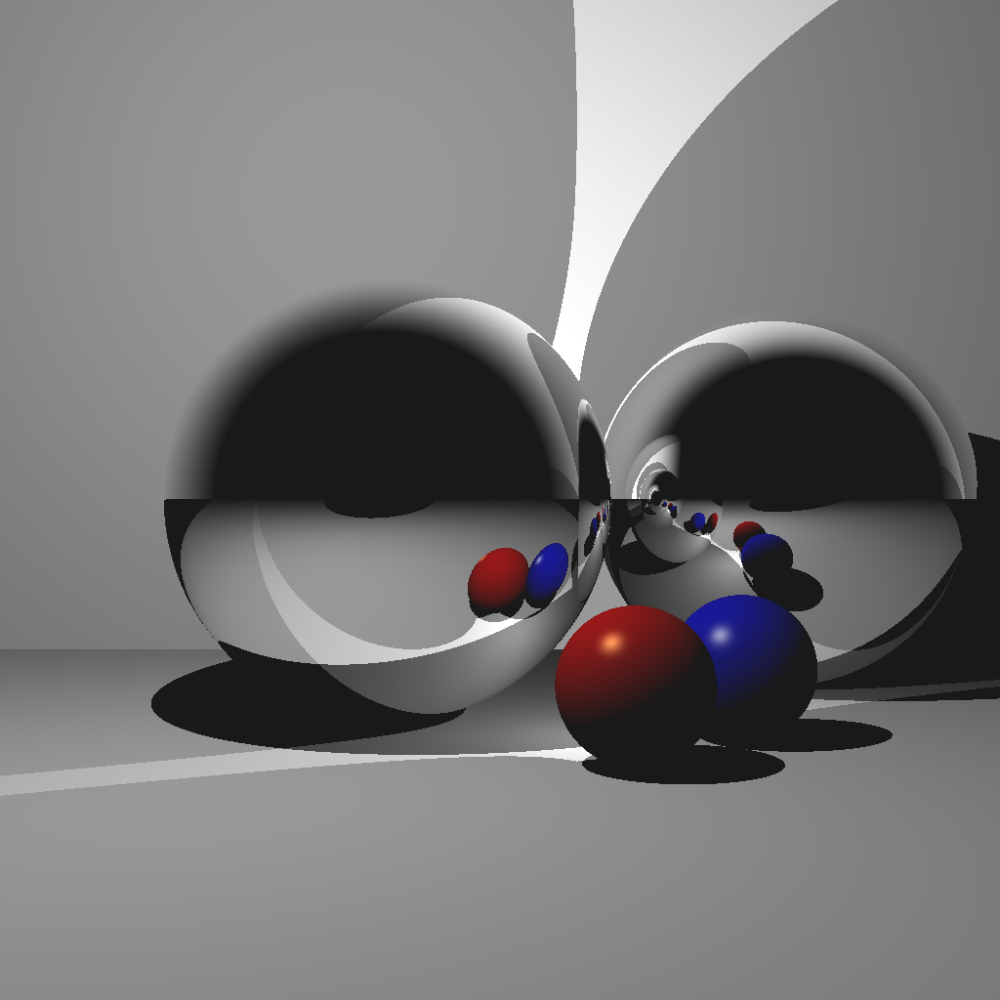

Welcome to My Portfolio!
Software Developer at Paycom, with a BS in Computer Science from Texas A&M University. I have honed my skills in various programming languages and frameworks, including C++, Python, JavaScript, React, and PHP. My approach to every project is characterized by a blend of precision and creativity, enabling me to deliver exceptional results. With an unwavering passion for problem-solving, I bring nearly two years of professional experience delivering full-stack solutions, and I seek opportunities to make a meaningful impact and learn wherever and whatever I can.
View My ProjectsSkills: C++, Python, JavaScript, TypeScript, PHP, C#, SQL, React.js, PyTorch, TensorFlow, AWS, Docker, Git, GitHub, Agile, Scrum, CI/CD, Test-Driven Development, Problem-Solving, Leadership, Communication, Teamwork
My Projects
MIDI Playground
[January 2026 - Present] Browser-based MIDI recording and playback studio with polyphonic synthesis, custom MIDI file writer/parser, and playlist management — built without external MIDI libraries.
View DetailsPiMemorizer
[October 2023] Built an app to help myself memorize the digits of pi. (I know over 150 digits now!)
View DetailsBoXHED2.0 - Undergraduate Research Assistant
[June 2023 - August 2023] Developed preprocessing code in R for this machine learning process.
View DetailsMOVE Texas A&M - Software Engineer
[January 2023 - May 2023] Designed and developed a web app for the MOVE Texas A&M student organization.
View Details
Computer Graphics
[August 2023 - May 2023] Implemented a ray-tracer from scratch using C++, among other graphics-related projects.
View DetailsAbout Me
I am a software engineer with a passion for creating. I graduated from Texas A&M University in May 2024 with a BS in Computer Science, and I am now working as a Software Developer at Paycom, where I build full-stack features for client-facing payroll systems using PHP, JavaScript, and React. I strive to stay updated with the latest technologies and continuously enhance my skills. My main goal in life is to develop meaningful technologies that help people live happier lives. To achieve this, I pursued a degree in Computer Science with minors in Cybersecurity and Mathematics, equipping myself with the necessary knowledge. Now, I'm actively seeking to bring my goal to fruition through impactful work. Recently, I've witnessed firsthand the immense potential of AI and machine learning to improve people's lives, and I firmly believe that, when developed responsibly, they can make the world a better place. Moving forward, I aspire to be a leader in this responsible development, maximizing the positive potential of these technologies. I am excited to contribute my skills and collaborate with like-minded individuals to create innovative solutions that shape a brighter future.